Road Network Processing & Analysis

Road Network Processing & Analysis
Introduction: This project is a deep-dive into the methods of working with OSM data, converting to various network formats, efficient memory usage in python, network analysis using methods from Graph Theory, and training linear regression models using statistics derived from the aforementioned network analysis.
Platforms used
- WSL2
- GitHub
- Jupyter Notebooks
- Python
osmnxpyrosmosmiumpandasscikit-learnmatplotlibnetworkx
Research Questions
- How can one obtain useful OpenStreetMap data in Network formats?
- Are road network properties related to GDP?
- Are road network properties related to population?
- Are road network properties related to area?
Data Set #1 - Continental Road Network Data
The first data set we looked at was provided in .mtx format, and had the simplified road networks for every continent.
Unfortunately, the .mtx network data did not have the associated OSM IDs of the locations corresponding to each node, so the amount of meaningful data that could be linked to alternatively sourced statistics would be minimal.
Data Set #2 - Complete Continental Road Networks
Data set #1 was processed using this source data; Binary-compressed OSM data with the complete road network for each continent, as well as countless buildings, walkways, bike paths, etc.
This data is far larger, especially after being decompressed from .osm.pbf to .osm.
Data Set #3 - City Road Networks
After finally giving in to the memory limitations imposed by continental data on a personal computer with only 48GB of DDR4 memory, we decided to scale down, and instead work on city road networks.
Thankfully, all of the processing & analysis code that has been written is completely generalized to run on the contents of a given directory, so we simply had to swap out which files were in the data/*/osm/ and data/*/pbf directories.
This data set is much smaller, and we were able to make much more progress, but the network conversion formats had numerous further limitations depending on the format / extraction method, so it will still require a computer with \(>48\)GB memory to run the complete analysis.
OSMNX Network Conversion
At first, we intended to use the osmnx library to process the OSM data, because it has some first-class OSM preprocessing functionality, such as graph simplification, figure generation, etc.
Unfortunately, the osmnx library has no way to load OSM data from the binary stream format .osm.pbf, so the command-line tool ‘osmium’ was used for the data conversion, ran as a python subprocess as seen below:
def convertOSMToPBF(pbf_path, out_path):
try:
command = ["osmium", "cat", pbf_path, "-o", out_path]
subprocess.run(command, check=True)
print(f"Successfully converted {pbf_path} to {out_path} ")
except Exception as e:
print(f"Error occured during file conversion: {e}")This conversion took the .osm.pbf files, which had an original total size \(<5\)GB, and converted them to .osm, with a new total size \(>50\)GB.
Furthermore, the osmnx library has no filestream parsing customization, so in order to convert the OSM data to a network and apply graph simplification, it would be necessary to have the OSM data, original network, and simplified networks all loaded in memory simultaneously. This is obviously infeasible, so we continued looking for alternative methodologies.
Manual Parsing
In order to avoid the obscene memory usage of the osmnx library, I wrote a custom OSM parser that read the binary .osm.pbf data and interpreted one edge at a time, only adding the necessary information to the generated graph.
# Handler for parsing ways
def way(self, w):
# Only highways
if 'highway' not in w.tags:
return
# Must be named
if 'name' not in w.tags:
return
for i in range(len(w.nodes)-1):
u = w.nodes[i].ref
v = w.nodes[i+1].ref
# Add the basic directional edge
unique_key = self.generateUniqueEdgeKey()
self.G.add_edge(u, v, key=unique_key, id=w.id, highway=w.tags['highway'], street=w.tags['name'], x=w.nodes[i].location.lat, y=w.nodes[i].location.lon)
# Add reverse edge if necessary
unique_key = self.generateUniqueEdgeKey()
if 'oneway' not in w.tags and w.tags['highway'] != 'motorway':
# Not a oneway, oneway tag DNE
self.G.add_edge(v, u, key=unique_key, osm_id='-'+str(w.id), highway = w.tags['highway'], street=w.tags['name'])
elif 'oneway' not in w.tags:
continue
elif w.tags['oneway'] != 'yes' and w.tags['oneway'] != '-1' and w.tags['highway'] != 'motorway':
# Not a oneway - oneway tag exists
self.G.add_edge(v, u, key=unique_key, osm_id=w.id, highway = w.tags['highway'], street=w.tags['name'])
returnThis worked, but the osmnx and pyrosm libraries both have very stringent requirements for the attributes associated with each node and edge in the network, such that it is incredibly difficult to manually generate a network that is compatible with their provided functionality while still maintaining the benefit of reduced memory utilization.
For context, the osmnx library’s implementation of graph simplification is of vital importance to get an intuitively meaningful road network from our source data, but it is practically impossible to load all of the necessary data in such a way that it remains compatible with the osmnx library’s functions without exceeding our 48GB limitation, even on some of our smallest networks.
At this point, the data processing pipeline was efficient enough to successfully load the network and OSM road data for each of our cities, as seen below:
**The nodes may be difficult to see in the network diagrams, as these networks have not had graph simplification applied due to excessive memory usage.*
Boulder
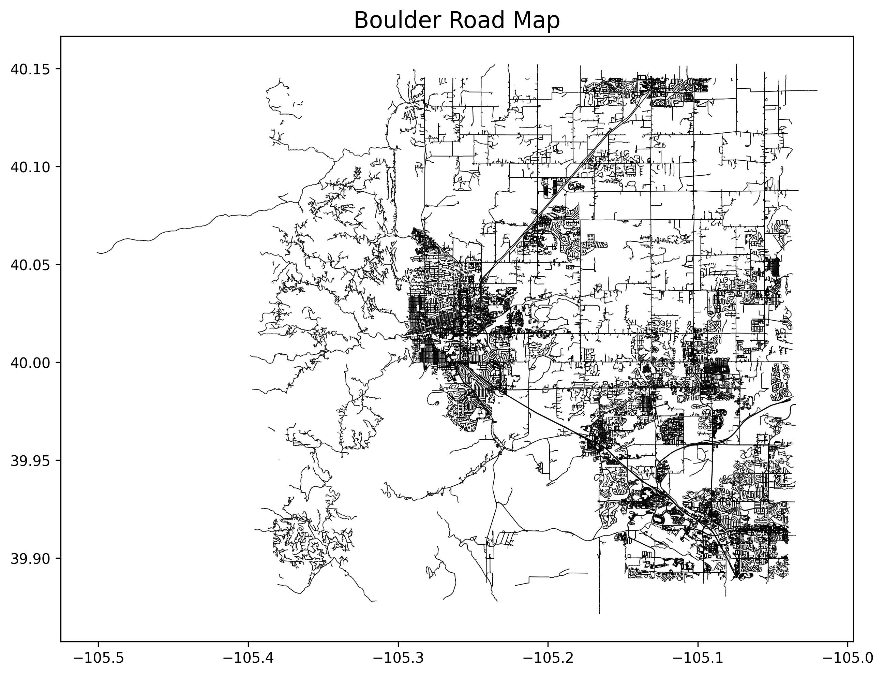
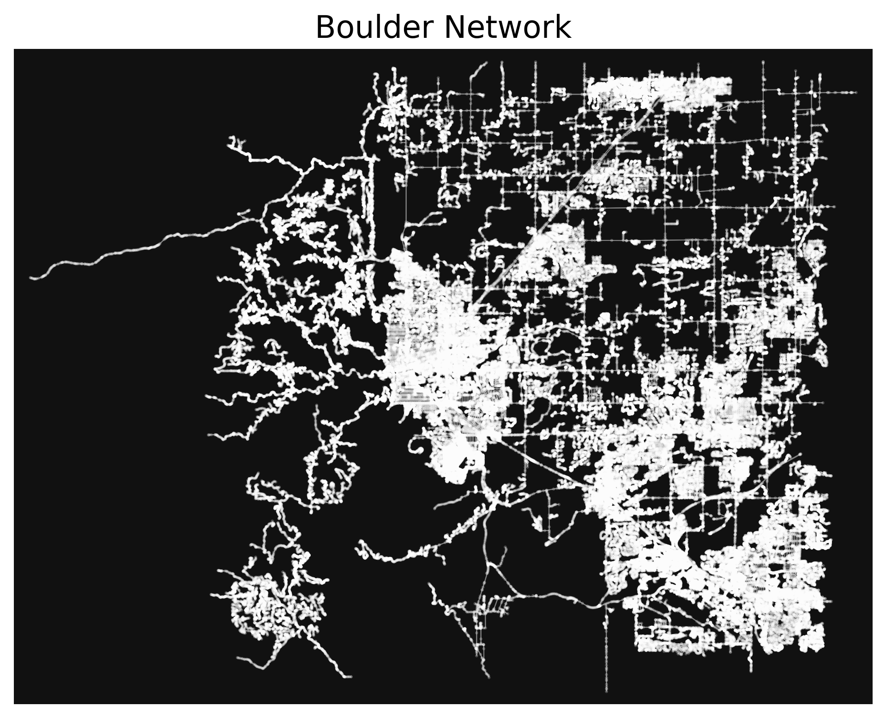
Sacramento
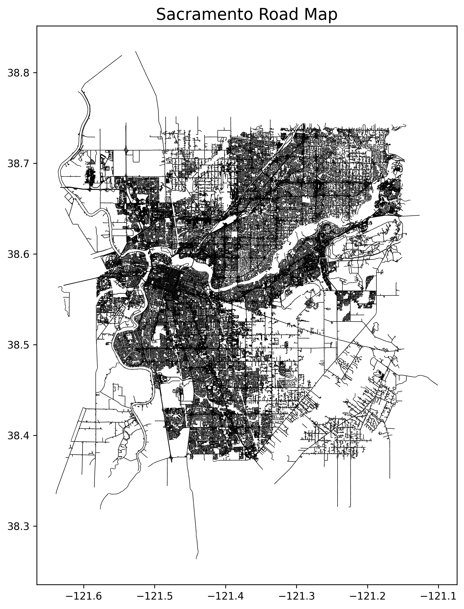
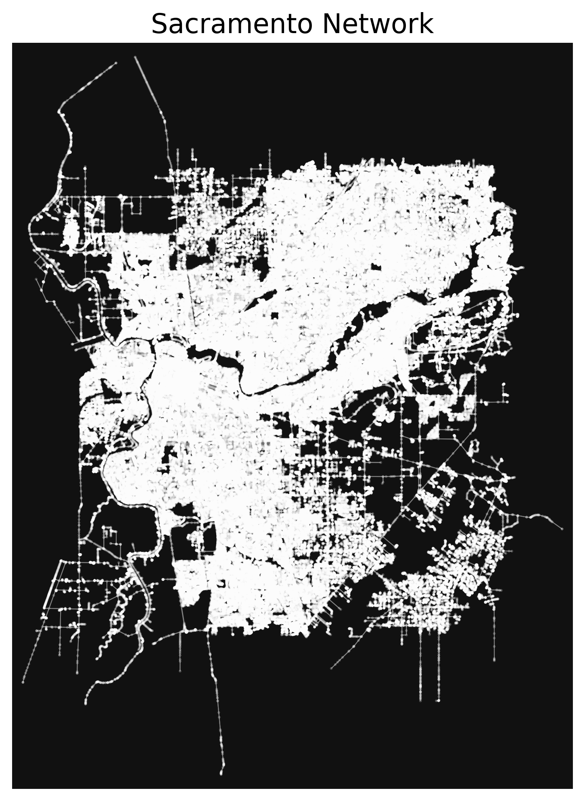
Chicago

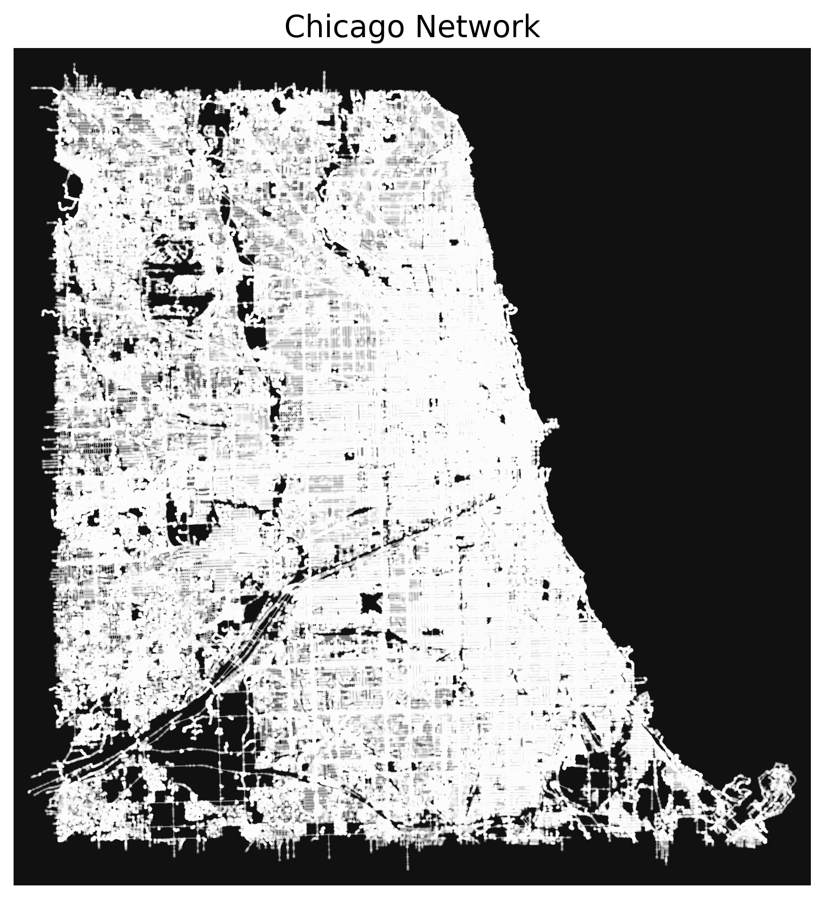
Portland
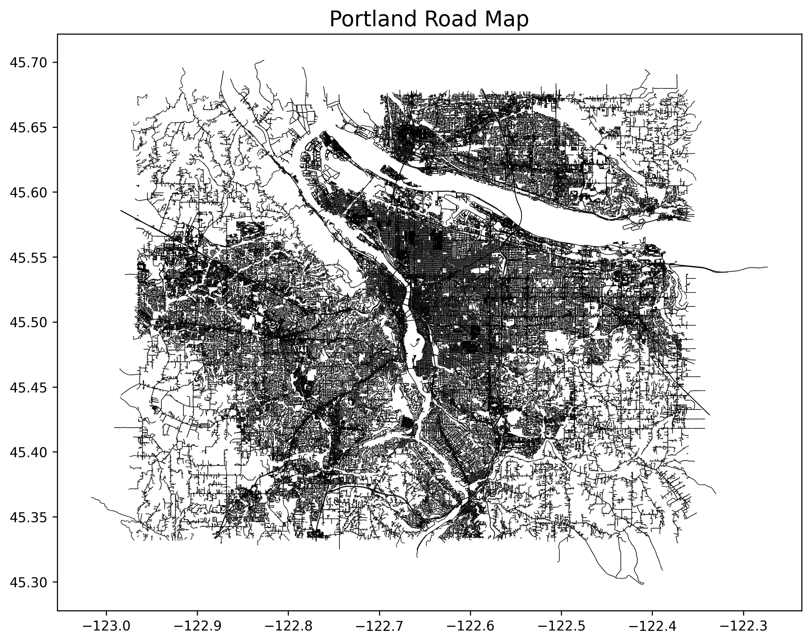
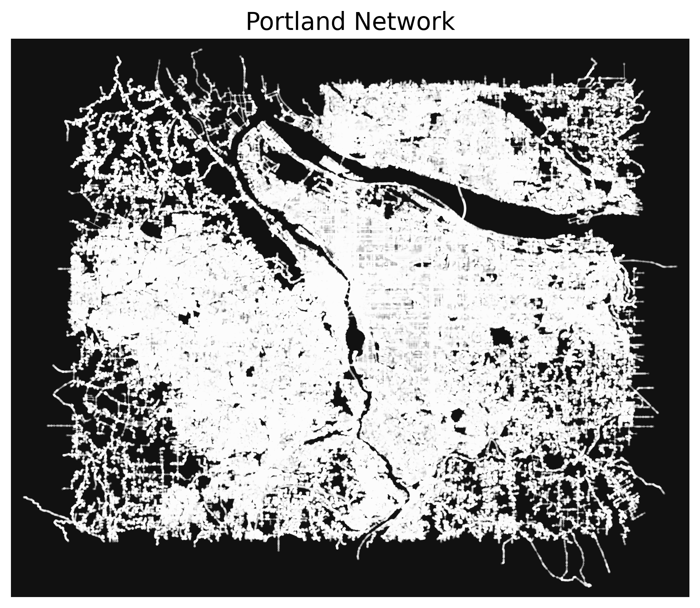
Seattle
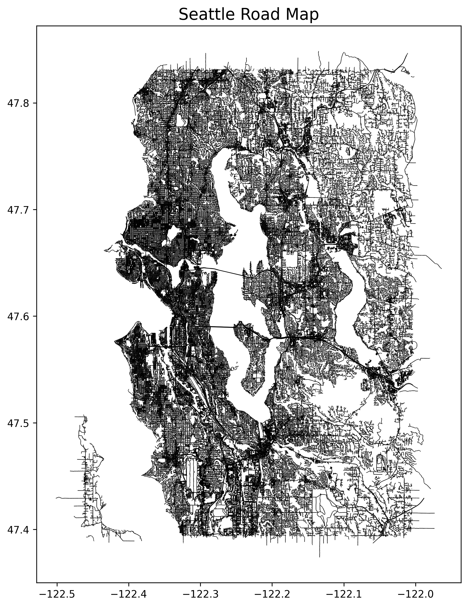
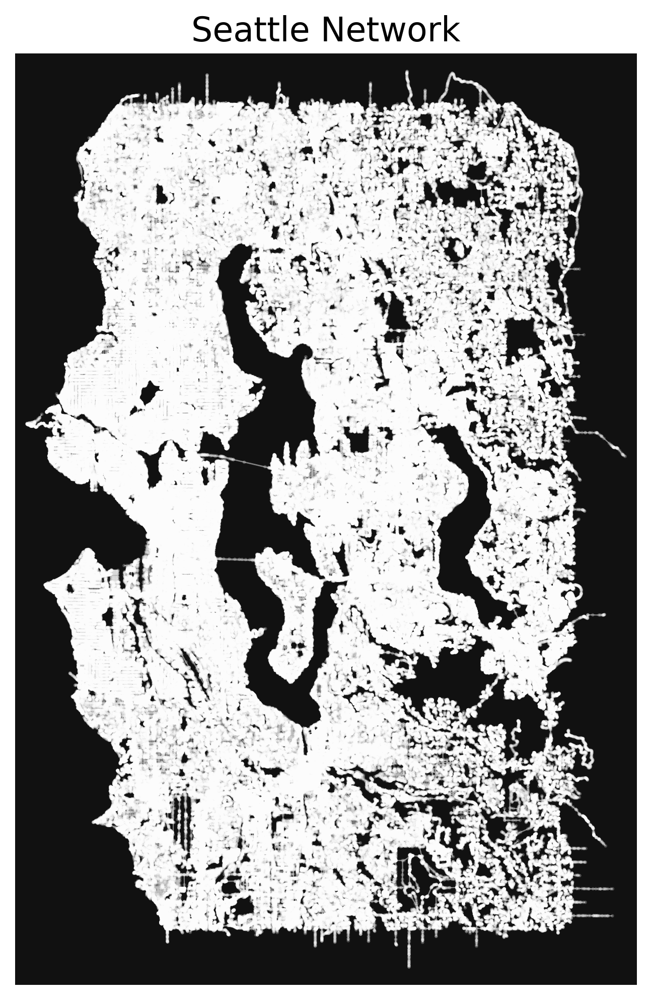
WashingtonDC

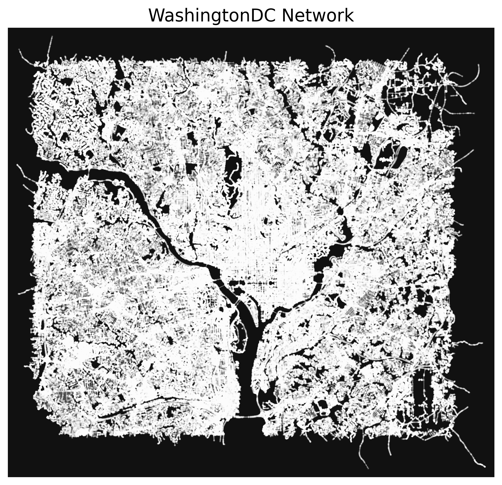
Library-Provided Network Analysis
The osmnx and pyrosm libraries both have excellent network analysis functions, but both necessitate the use of MultiDiGraphs, which use a far larger amount of memory than the standard undirected graph, which I ended up parsing the .osm.pbf as in the final revision.
Even with only the smallest city loaded, all attempts to run network analysis functions would immediately hit the memory capacity and hang the process.
Custom Network Analysis
In an attempt to extract some meaningful data from these city networks, I first loaded the .graphml files which I had saved from earlier conversions. After this, I converted the graphs to undirected, which further reduced memory utilization. This modification was done in-place, so as to prevent the previous copy from retaining it’s memory usage.
Despite these measures, all graph-wide functions calls would still hit the memory utilization cap, causing the program to hang.
As a potential workaround, I implemented a graph sampling function, which extracted 5% of the nodes from the network. Even in this extremely streamlined processing pipeline, analysis function calls were only successful on the smallest of our cities. Once run on any larger city, the program would hit the memory ceiling and hang.
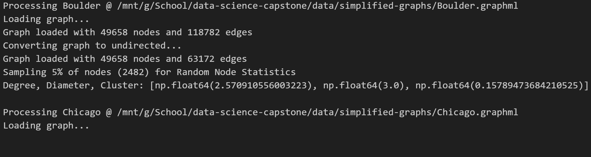
Generation of Faux Networks
At this point, I decided that I’d done more than a reasonable amount of data processing, attempting to streamline the process enough to run it on all our cities. This unfortunately was not entirely successful, and I now turn to the generation of faux Erdős–Rényi random graphs in the supercritical regime, with edge probability roughly proportional to the population of each city.
These faux networks are unlikely to bear any resemblance to the real-world road networks, and are merely a stand-in until the processing pipeline can be run on a computer more powerful than my own.
The decision to generate networks with edge probability correlated to city population is largely arbitrary, merely an attempt to demonstrate some level of relation between the generated networks (and therefore their network properties) and the city statistics that will be predicted by our model.
n = 500
n_graphs = len(city_base_stats)
critical_point_p = 1/(n-1)
# Point at which most of the graph is part of one connected component
print(f"critical point: p = 1/(n-1) = {critical_point_p}")
connected_point_p = np.log(n)/n
# Point at which ALL of the graph is part of one connected component
print(f"connected regime: p > ln(n)/n = {connected_point_p}")
supercritical_range = connected_point_p - critical_point_p
# List of points in this range
erdos_p_vals = [critical_point_p + p for p in [((d+1)/n_graphs) * supercritical_range for d in range(n_graphs)]]
print(f"p values for our graphs: {[float(p) for p in erdos_p_vals]}")
# Generate erdos-renyi random graphs
raw_G_list = [nx.erdos_renyi_graph(n, p, 42, directed=False) for p in erdos_p_vals]
# Extract largest connected component from each
conn_G_list = [G.subgraph(nodes) for G, nodes in [(G, max(nx.connected_components(G), key=len)) for G in raw_G_list]]
# Display size of each graph
n_list = [nx.number_of_nodes(G) for G in conn_G_list]
print(f"Graph node counts: {n_list}")critical point: p = 1/(n-1) = 0.002004008016032064
connected regime: p > ln(n)/n = 0.012429216196844383
p values for our graphs: [0.003741542712834117, 0.005479077409636169, 0.0072166121064382235, 0.008954146803240276, 0.01069168150004233, 0.012429216196844383]
Graph node counts: [376, 460, 480, 494, 498, 500]Network Analysis
A number of network properties were calculated as features to be used for training a linear model to predict known statistics for their corresponding city.
Network properties include:
- Distance: How far away is one node from another. In this case, pairwise distance between each possible pair of nodes is calculated, then a proportional distance distribution is generated for each of our networks.
- Diameter: What is the furthest optimal distance between any two nodes in the network.
- Eigenvector Centrality: Similar to asking how many neighbors the average node has, but instead of just neighbor count (degree), it also takes into account the degree of each neighbor, thereby prioritizing nodes with connections to other high degree nodes, rather than simply nodes with many connections.
City properties include:
- GDP: USD in 2023
- Population
- Area: Square miles
Below is an overview of the code used to calculate the network properties on each of our pseudo-generated road networks:
# Gives the proportional distance distribution of the largest connected component in a graph
def distanceDistribution(G):
component_distances = []
# Get all the connected subcomponents
S = [G.subgraph(c).copy() for c in nx.connected_components(G)]
# Select the largest one
largest_sg = max(S, key=len)
# Get the distances
raw_distances = nx.shortest_path_length(largest_sg)
# largest_size = nx.number_of_nodes(largest_sg)
# unreachable_nodes = sum([len(g) for g in nx.connected_components(G)])-largest_size
for d in raw_distances:
distances = list(
dict(d[1]).values()
) # Distances to nodes reachable from this node
component_distances += distances
# Update histogram for each distance
max_distance = max(component_distances)
y_list = list(np.zeros(max_distance))
for d in distances:
y_list[d - 1] += 1 # Update histogram
y_list = [y / sum(y_list) for y in y_list]
return y_list
# Get the diameter of each graph
diam_list = [nx.diameter(G) for G in conn_G_list]
city_base_stats['Diameter'] = diam_list
# Get the x range for the cumulative distribution
x_list = [x/100 for x in range(101)]
y_lists = []
y_labels = []
min_centralities = []
mean_centralities = []
max_centralities = []
# Calculate eigenvector centrality for each
for i, G in enumerate(conn_G_list):
# Save the city name
city_name = city_base_stats.City[i]
y_labels.append(city_name)
print(f"{COLORS.white}Graph {i}: {city_name}{COLORS.default}")
# centrality of each node; [0,1]
centralities = list(nx.eigenvector_centrality(G, max_iter=100, tol=0.01).values())
# Centrality stats for this city
n_c = len(centralities)
min_c = np.min(centralities)
min_centralities.append(min_c)
mean_c = np.mean(centralities)
mean_centralities.append(mean_c)
max_c = np.max(centralities)
max_centralities.append(max_c)
print(f"n: {n_c}")
print(f"min: {min_c}")
print(f"mean: {mean_c}")
print(f"max: {max_c}")
# Start the y values all at 0
y_list = [0]*101
# Bin them correctly and add 1
for c in centralities:
idx = int(np.floor(c * 100))
y_list[idx] += 1
# Divide each by n to get a normalized distribution
for i, y in enumerate(y_list):
y_list[i] = y / n_c
y_lists.append(y_list)Centrality Distributions
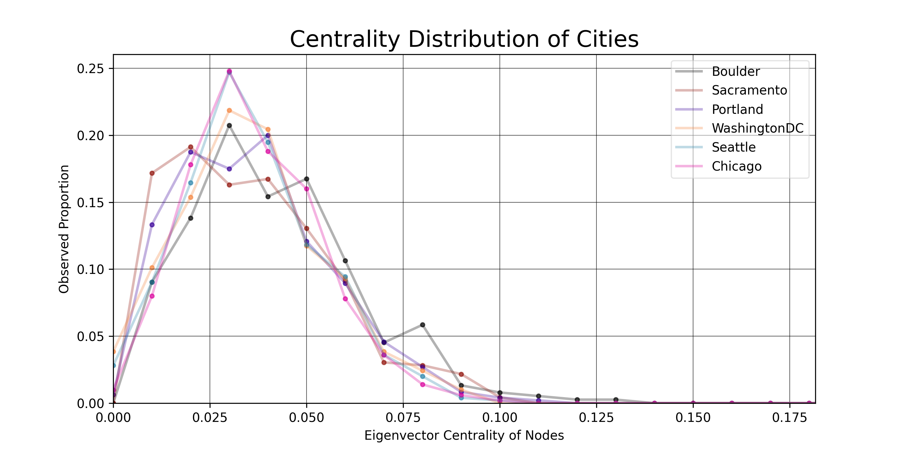
Distance Distributions
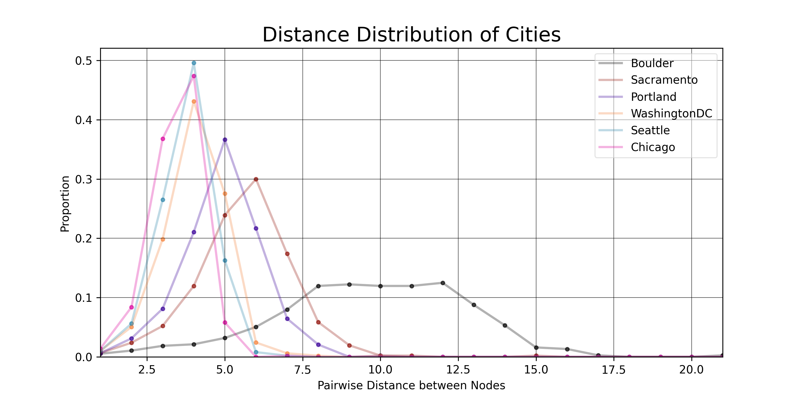
Linear Model
The stats associated with each of our cities was collected and placed in a .csv file, then loaded as a pandas DataFrame.
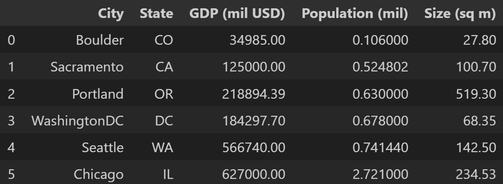
The calculated network parameters were then loaded into the DataFrame, and each feature was standardized to make things easier for the linear model.
The data for our 6 cities were split into 4 for training and 2 for testing (I know that’s not nearly enough for a statistically meaningful model, but this pipeline is merely a proof-of-concept until the actual networks can be generated).
Training Data
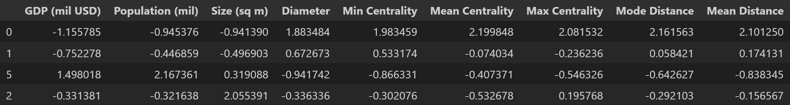
Linear Model Results
The linear model performed poorly, as expected.
The results were evaluated against the test data with \(R^2\) values between \(-1863.02\) and \(-0.12\).
\(MSE\) (standardized) was between \(0.61\) and \(2.66\).
These evaluation metrics imply that the model is effectively spouting nonsense, which is unsurprising, considering the sample size and method of faux data generation. The networks were generated randomly, with limited relation to their corresponding cities. At this point, it would be unreasonable to expect the model to perform with any meaningful level of accuracy.
That being said, once this processing & analysis pipeline can be run on a computer with more memory, it will be trivial to refactor this linear model to use the actual associated networks from potentially hundreds of cities.
Conclusion
OSM data is some of the messiest, most memory-hungry formats around, and I would only recommend working with this data if you have access to machines with hundreds of gigabytes of memory.
The network analysis and linear model training were both functional, just in need of more data to work from.
If anyone wishes to pick this project up, I would highly recommend looking into future implementations of Topological Graph Simplification. The paper only came out in May of 2025, so I am unsurprised that existing implementations are very limited.
Additionally, it would be worth investigating meaningful ways of comparing network property distributions, perhaps similar to the Kolmogorov-Smirnov Test.
Thank you very much for your time! Please feel free to contact me with questions or comments.
Bio - Jacob Collins

I am a Computer Science major here at California State University, Chico. This project has been completed as the capstone to a Data Science Certification alongside my Bachelor’s degree. I’ll be staying for the next year or so to complete the MS program, and I hope anyone reading this feels comfortable reaching out if they have any questions! My GitHub profile can be found here.